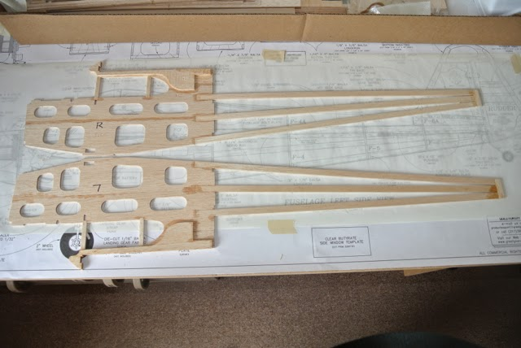
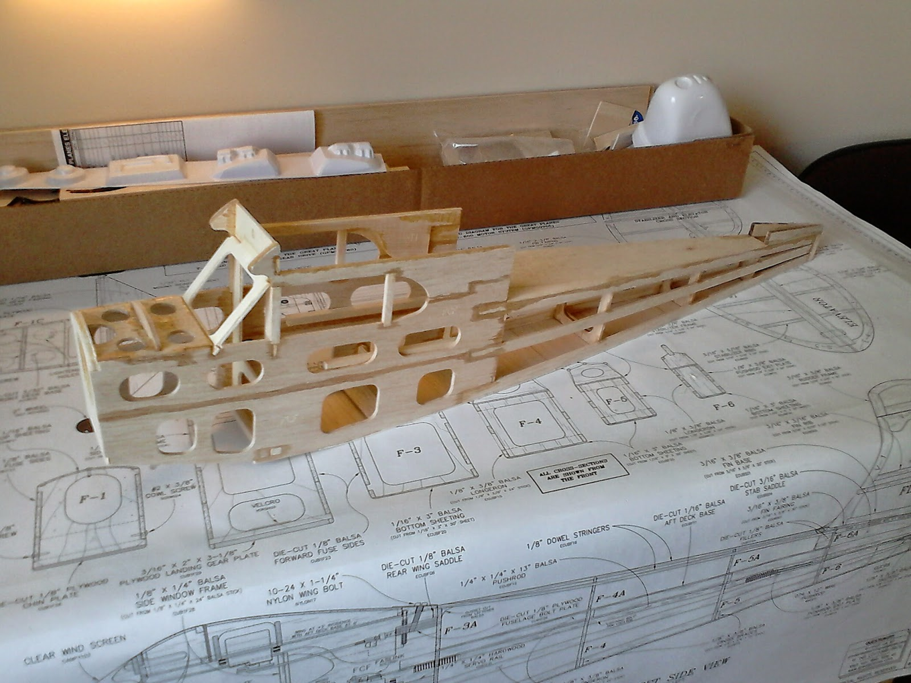
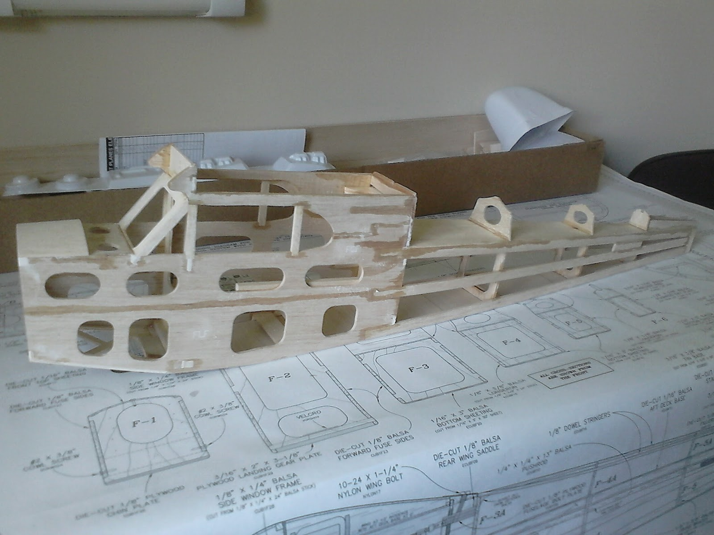

Radio Controlled Aircraft
Over the past month I have only been able to snatch a few minutes here and there to work on my Cub. And it is likely to stay that way for at least the next couple of weeks. I've also only managed one trip to the flying field over that period, and that was last week!
However, my few minutes here and there have resulted in some progress on the fuselage. I have:
- Built the two sides;
- Joined them with the main formers;
- Joined the tail posts and added the other formers;
- Added the aft deck and sheeted the bottom.
Yesterday I finally got around to glueing the cabin brace, front deck base and firewall in place.
Two areas have proved tricky. Firstly, joining the tail posts so that they remain perpendicular. My chamfering of these so that they joined and were of the required width could not have been sufficiently accurate, since the tail post is vertical when measured on one side, but slightly out on the other. I guess the critical part will be ensuring that the tailplane is perpendicular to the fuselage. Secondly, when glueing the front deck base and firewall, the instructions suggested simply using rubber bands to pull the sides in. In practice, this approach caused the side walls to bow. So I used two strips of ply, one on each side, with bands across the top and bottom, pulling the walls inwards. This did most of the job, but needed some finger pressure also. However, I didn't think to put some CA-resistant paper between the ply strips and the fuselage and one got glued to the side. I was able to cut it free without too much damage to the side balsa. The other potential problem is that the firewall doesn't seem to fit completely flush with the front edge of the side walls. This might affect the motor offset, but equally might be too small to notice.
This photo may not look very different to the one above. However, it has the front decking, extension formers from the rear of the wing and the wing saddle and fixing platform. So it is ready for the next stage which is to mount the wings, including their fixing bolts, glue on the tailplane and fin and add the stringers along the top of the fuselage. This is followed by various fillets and in-fills and the landing gear, before fitting the motor and cowl. This assembly of the parts is described on the 'Mounting the Wing etc.' page.